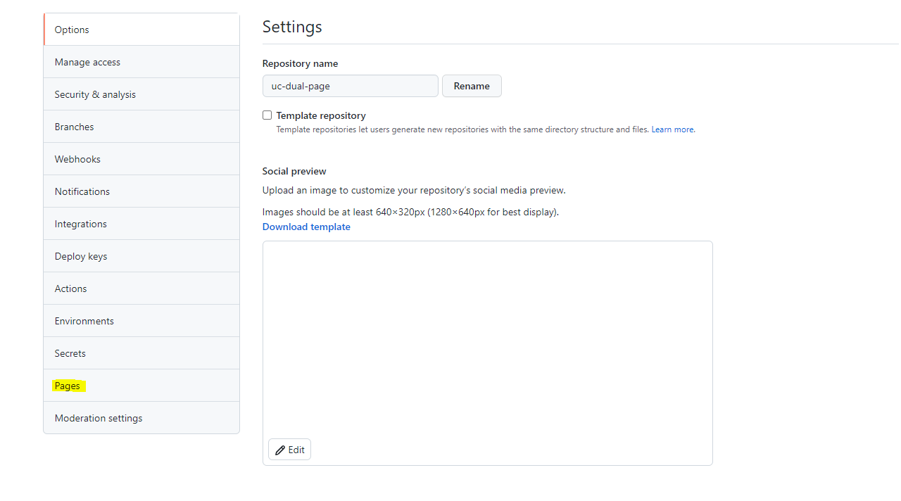
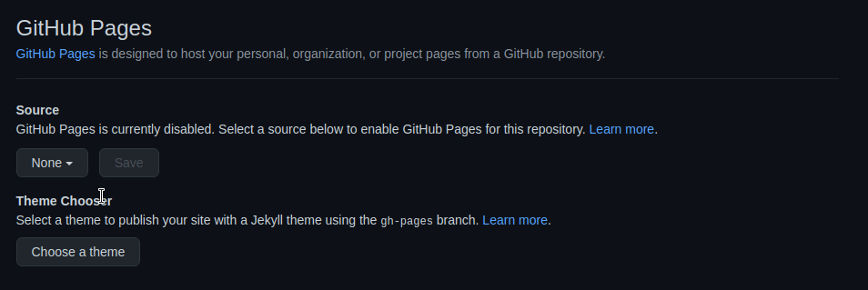

Passo 1 - Criando um repositório no GitHub
Ao acessar sua conta, você terá uma opção de criar um novo repositório no canto superior direito (um ícone de '+' ao lado da sua imagem de perfil).
Depois, clique na opção "new repository" que irá te redirecionar para outra página, na qual você deverá definir um nome para o seu repositório e, opcionalmente, uma descrição também. É importante que você deixe seu repositório público e sem nenhuma das opções disponíveis ao final. Você pode observar na imagem abaixo como ficou o preenchimento dos dados:
Passo 2 - Versionando a aplicação estática
Para enviar sua aplicação estática ao GitHub, é necessário tornar a pasta do seu projeto em um repositório do Git. Para isso, você vai precisar abrir a pasta do seu projeto no terminal por lá.
Se você utiliza o Windows, você pode acessar a pasta do seu projeto por meio do próprio explorador de arquivos, clicar dentro dela com o botão direito, e em seguida clicar na opção "Git Bash Here". Se você estiver utilizando Linux ou Mac, você pode acessar essa pasta pelo próprio Terminal do sistema.
Com o Terminal ou Git Bash aberto, você deve inicializar um novo repositório local com o comando git init. Em seguida, adicione todos os arquivos à "staging area" por meio do comando git add .. E, por fim, adicione todos os arquivos ao seu repositório com o comando git commit -m 'primeiro commit'. Em resumo, os comandos necessários são apresentados abaixo:
- git init
- git add .
- git commit -m 'primeiro commit'
- git push
Você pode também pode utilizar outras formas para versionar que você esteja mais acostumado.
Passo 3 - Integrando o Repositório ao GitHub Pages
Para finalizar, vamos solicitar que o GitHub disponibilize um link do GitHub Pages para essa nossa aplicação estática. Para isso, você precisa ir até a aba "settings" do seu repositório.
Uma vez que você tenha acessado esta aba, você deve clicar no menu "pages", disponível na barra lateral.
O último passo consiste apenas em ir até à seção "source", selecionar a branch "main" ou "master" no dropdown e clicar no botão "save". Observe esses passos na imagem abaixo:
O site estará disponível no link gerado.